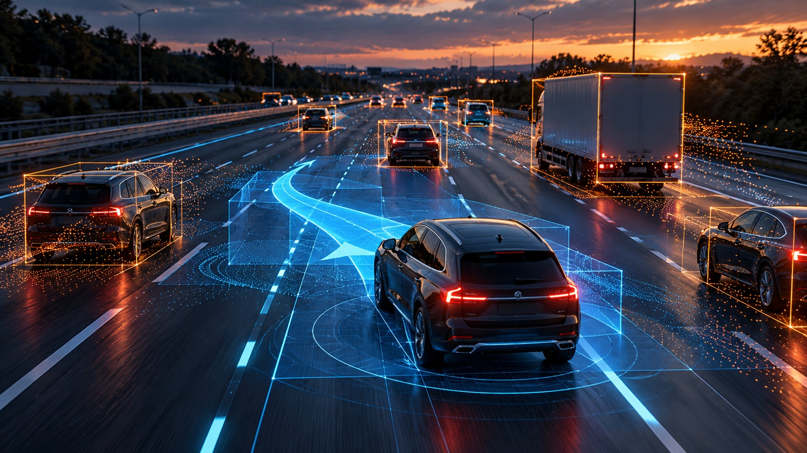
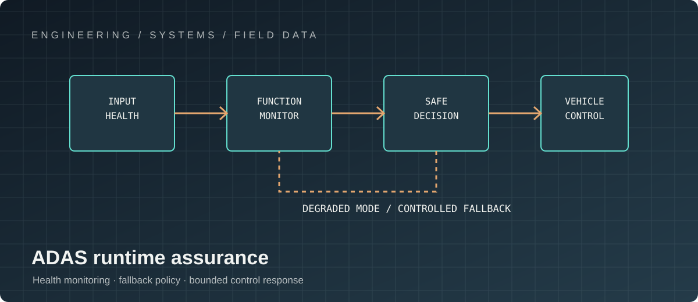
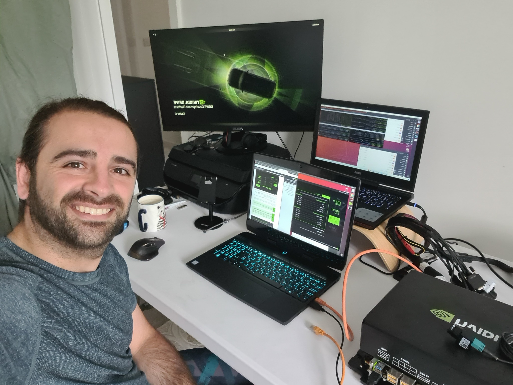

PROJECT 05 / ADAS
ADAS Automated Lane Change
End-to-end embedded architecture for an automated lane-change function using NVIDIA compute platforms and the QNX operating system.

My contribution: system architecture and real-time integration
I treat automated lane change as an end-to-end function spanning perception, localisation, behaviour planning, trajectory generation, vehicle control and driver/vehicle interfaces. On NVIDIA compute with QNX, my architectural focus is on dataflow, process boundaries, scheduling, IPC, memory movement, startup sequencing, health monitoring and end-to-end latency—not simply getting individual components to run.

My role: cross-functional engineering and safety

I translate system-level behaviour into component responsibilities and interface definitions, then align perception, planning, control, platform, hardware, safety and validation contributors on timing, data quality, fault semantics and degraded modes. I focus on architectural trade-offs and cross-layer debugging—particularly when latency, scheduling, sensor data freshness or hardware acceleration affects the behaviour seen at vehicle level.
My validation approach covers manoeuvre eligibility, adjacent-lane occupancy, cut-ins, occlusion, sensor degradation, compute overload, communication faults and driver cancellation. I look for a traceable separation between decision and actuation, execution monitoring against the planned trajectory, and deterministic fallback conditions when confidence or platform health no longer meets the contract.
TECHNICAL LEADERSHIP / ADAS
Architecture across perception, planning and real-time execution
Automated lane change is a distributed, latency-sensitive function. Its correctness depends on consistent object and lane models, manoeuvre eligibility, trajectory feasibility, execution monitoring and a safe response when inputs, compute or communications no longer meet their contracts.
Core expertise
- End-to-end functional architecture spanning perception, localisation, behaviour planning, trajectory generation, control and HMI.
- NVIDIA compute-platform integration, including acceleration-aware dataflow, memory movement and end-to-end latency budgets.
- QNX real-time operating-system integration: process boundaries, scheduling, IPC, startup sequencing, watchdogs and health monitoring.
- Interface contracts for timestamps, coordinate frames, confidence, data validity, freshness and graceful degradation.
- Runtime supervision: manoeuvre eligibility, adjacent-lane gap assessment, trajectory tracking and cancellation/fallback conditions.
- Cross-functional alignment with perception, controls, platform, safety, systems, vehicle integration and validation teams.
- Performance analysis across CPU/GPU utilisation, scheduling jitter, data-pipeline bottlenecks and overload behaviour.
- Scenario-based validation for cut-ins, occlusion, lane-marking degradation, sensor dropouts, late messages and compute faults.
My technical leadership and programme contribution
I turn system goals into architecture decisions, interface contracts, risk controls and a staged verification plan. I drive cross-disciplinary design reviews, make timing and failure assumptions explicit, arbitrate performance-versus-robustness trade-offs, and coordinate simulation, bench, HIL and vehicle evidence against requirements.
For a function that acts on a moving vehicle, safety is a system property: planning intent must be checked against execution, health monitoring must be independent enough to detect failures, and fallback behaviour must be bounded, observable and testable.